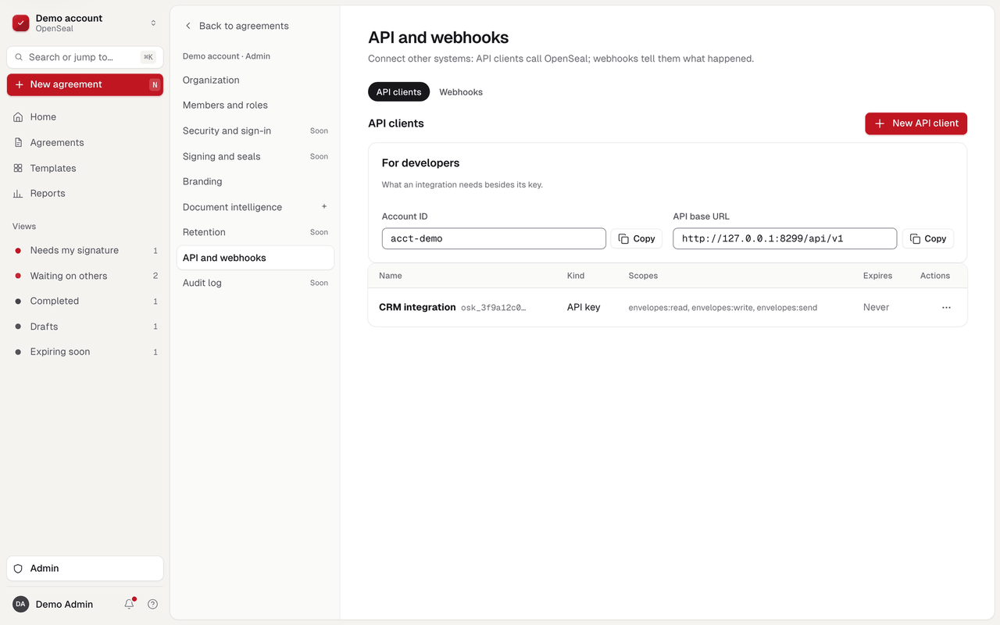
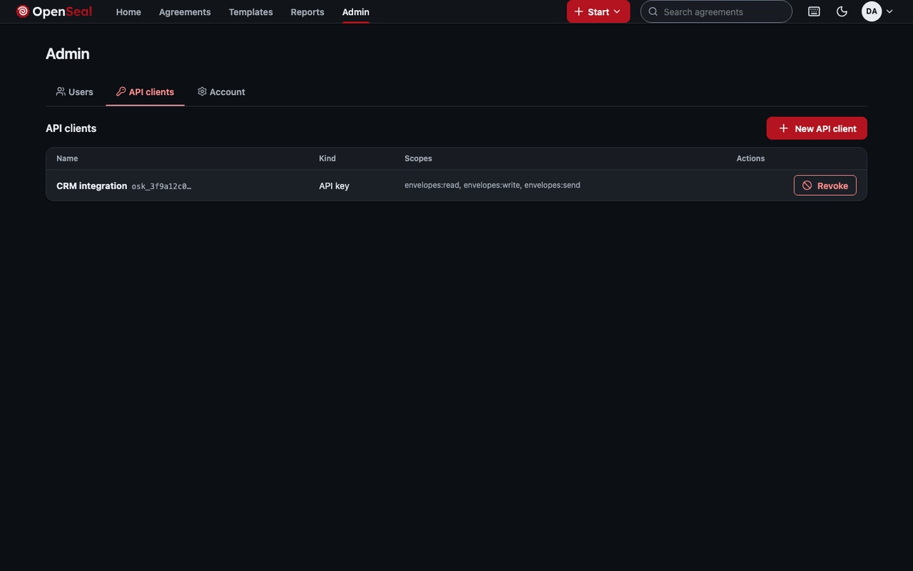

Administration
Administrators manage who can use the account, which programs can call the API, and the account's defaults. Everything here is under Admin, and every action is also an API call.
Users
A member signs in to send and manage envelopes; signers never need an account. Each member has a permission profile. Three are built in:
| Profile | Can |
|---|---|
admin | Everything, including users, API clients and account settings |
sender | Create, send and manage envelopes and templates |
viewer | Look at envelopes without changing them |
- Invite user emails a one-time link to set a password. Resend invitation sends a new link; earlier links stop working.
- Or add a user with a password (at least 12 characters), or none for someone who signs in another way.
- Disable sign-in stops a member signing in or calling the API. Their envelopes stay, as they do when a member is removed.
- Custom permission profiles choose exactly which scopes a member holds; the server enforces them on every request and never grants more than the administrator making the change holds.
- Groups collect members, so a template can be shared with a group at once.
Passwords on a list of breached and common passwords are refused wherever a password is set. A member can add a second factor (an authenticator app code, with ten one-time recovery codes), and the account can require one of administrators or of everyone. Members are emailed when their password or second factor changes.
The first administrator is created on the command line with bootstrap (Getting started).
API clients


A program calls the API with one of two kinds of credential:
- API key (
osk_…), sent as a bearer token. Good for scripts. - OAuth client: a client id and secret exchanged at
/api/v1/oauth/token(client-credentials grant) for a one-hour access token signed by the server. Good for services; the keys that verify tokens are at/.well-known/jwks.json.
Each client gets only the scopes it needs and an expiry between 1 and 3,650 days. The secret is shown once, when it is created, and stored only as a hash; copy it then. Revoke stops it at once.
| Scope | Allows |
|---|---|
envelopes:read | List and read envelopes, documents, recipients, fields and status |
envelopes:write | Create envelopes; change drafts, their documents, recipients and fields |
envelopes:send | Send, correct, resend and void; embedded signing links |
templates:read, templates:write | Read or manage templates |
webhooks:manage | Manage webhook subscriptions |
admin:users | Manage members and invitations |
admin:account | Account settings and API clients |
audit:read | Read audit trails |
bulk:send | Bulk send from a template with a list of recipients |
The scope each operation needs is listed beside it in the API reference.
Admin audit log
Every change to settings, members, groups, profiles, workspaces and the organization is recorded in a hash-chained log in the same transaction as the change. Audit log lists it and exports it as JSON or CSV. Nothing in it is ever edited or deleted.
Organizations and workspaces
Each account is a workspace inside an organization. A person in several workspaces switches between them from the sidebar's workspace menu. Organization owners and administrators see the organization's workspaces, people, administrators and its own audit log.
Account settings and branding
- Settings: the account name, after how many days new envelopes expire, and when the first reminder goes out.
- Branding: the name recipients see in emails and on the signing page, and an accent colour. Text on that colour must stay readable; the form says so if it would not.
Planned for organization admin (VS-10): OIDC and SAML single sign-on for members, passkeys (WebAuthn), domain claims, SCIM and delegated administration. See the roadmap.